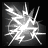

THE BLACK ROAD CHALLENGE
The Black Road challenge is the hardest challenge in Median XL. It consists of five trials, ranging from easy to very difficult.
Killing a Boss
This challenge requires you to 'kill' a boss. This means that you need to be
physically present at the battle and near the boss when it dies before
you can use the cube recipe that grants you the reward.
If you succeed in killing the target monster, this overlay appears:

You now have 30 seconds to perform the cube recipe. If you are too slow and the red overlay goes away, you have to do it again!
Warning! This does not work if the monster is killed by reflected damage, due to a Diablo II engine limitation. Please use different means of killing the target.
You need your Class Charm
This challenge requires you to have your Class Charm. This is a charm that
drops in the Kurast 3000 BA uberlevel. If you did the Ennead Challenge, you already
have one.
If not, see THIS PAGE for more information about Kurast 3000 BA.
THE FIVE TRIALS
It is said that the demon Kabraxis rewards his followers with infernal powers: the ability to heal, cast apocalyptic spells or fight like no mere human ever could.
To obtain Kabraxis' favour, you will need to pass his tests of faith first. These tests are based on the human weaknesses Kabraxis exploits to corrupt mortals. Thankfully, you are well above being corrupted... right?
The Black Road Challenge consists of five parts. You can do them in any order, but you need to do all of them if you want the reward.
1. Trial of Fear
Overcome your fear of demons by tackling the Butcher in Terror
difficulty. Go to The Hole Level 2 and summon him, then kill him. Cube
the charm while the red swirls are on your character.
See THIS PAGE for more information on the Butcher.
2. Trial of Greed
Material wealth is a sign of demonic corruption. To pass this trial, keep 666,666 gold or more on your character (not your stash), then use the recipe to complete the trial.
3. Trial of Contrition
Kabraxis is almost impressed with your combat prowess against demons. But how about
other humans? To complete this Trial, summon and kill Shaman King Koth
on Terror difficulty. Cube the charm while the red swirls are on your character.
See THIS PAGE for more information about King Koth.

4. Trial of Knowledge
Obtain untold wisdom by collecting the positronic brains of the five Robot
Bosses in Fauztinville in Terror difficulty. Kill the Robot Bosses and snap
up their Brains.
See THIS PAGE for more information about Fauztinville.
Fauztinville is a huge level, and the Robot Bosses are fairly well hidden. You may need to explore the whole level. One of the bosses requires a teleportation ability to access; if you cannot teleport, use an item with charges of a teleportation skill, like the runeword Pax Mystica or the ubercharm Moon of the Spider. A second boss is at the end of a hidden passage, but can be accessed through teleportation as well.
5. Trial of Blood
Kabraxis' element is Fire. Try and sway the Amazon Islands to your
cause by eliminating the Priestesses of the amazon gods of Ice and Lightning.
But do it quickly. Kabraxis has no time to waste on bumbling humans like you.
Your targets are Skovos, Priestess of Karcheus and Lycander, Priestess of Zerae. Both can be found in the Tran Athulua uberlevel. Go kill them on Terror difficulty.
The catch is that after you kill either one, you now have only 30 seconds to kill the other and then cube the charm. The timer starts to tick down after your first kill. You can only complete this Trial if you lead them to the same area and kill them quickly, one after the other.
See THIS PAGE for more information about Tran Athulua.
There is a third Priestess on the level, Philios, Priestess of Hefaetrus. Make sure you kill the correct Priestesses.
Black Road Completion
You did all five Challenges above? Great! If you have followed the above instructions and cubed your charm each time correctly, there should be a note added to your charm: "All Trials Completed!"
Now to claim your reward buy four Sacrifical Hearts (sold by
magic item vendors) and cube them with your class charm.
This will add a number of bonuses and unlock the Level
Challenge Skill in your skill tree.
This upgrade recipe adds the following bonuses to your Class Charm:
 | Amazon : uses Sacred Sunstone +150 to Life +150 to Mana Unlocks your Black Road Challenge skill |
 | Assassin : uses Shadow Vortex +150 to Life +150 to Mana Unlocks your Black Road Challenge skill |
 | Barbarian : uses Worldstone Orb +150 to Life +150 to Mana Unlocks your Black Road Challenge skill |
 | Druid : uses Caoi Dulra Fruit +150 to Life +150 to Mana Unlocks your Black Road Challenge skill |
 | Necromancer : uses Soulstone Shard +150 to Life +150 to Mana Unlocks your Black Road Challenge skill |
 | Paladin : uses Eye of Divinity +150 to Life +150 to Mana Unlocks your Black Road Challenge skill |
 | Sorceress : uses Nexus Crystal +150 to Life +150 to Mana Unlocks your Black Road Challenge skill |
Your free bonus skill
This skill can be found at the top right of your first skill tab. When you
complete the Black Road Challenge, upgrade your Class Charm and keep it into your
inventory. This allows you to put skill points into the skill.
| Name | Icon | Effect |
|---|---|---|
| WAR SPIRIT [AMZ] | 
| Many of the amazon deities represent an aspect of war. The deity's spirits, summoned by an
amazon high priestess or warrior queen, protect her in battle by striking down her enemies, seemingly
out of nowhere. Effect: periodically emits spike novas that deal weapon damage |
| PSYCHIC SCREAM [ASN] |  | There are two schools in psychic training. The most common school promotes balance of mind and peace of thoughts. This is a creation of the other school: a primal scream that overwhelms weaker minds with pain and confusion. Effect: short ranged shockwave that forces enemies to flee |
| THUNDERGOD [BAR] | 
| A warrior who has his eyes on the throne of his tribe is sent to the summit of Mt. Sescheron to
await the next thunderstorm. If he survives, he may have learned something valuable about the forces of nature. Effect: adds stun damage and periodically emits stun novas |
| LIFESHIELD [DRU] | Aside from their healing effect on humans and other animals, the juice of the Glor-An-Fhaidha's
fruits can be applied to armour, making it as hard as the bark of a thousand year tree. Passive effect: consuming a Goodberry also increases defence | |
| GRAVEYARD [NEC] | 
| The deathspeaker establishes an aura powered by the emanations of a demon's wicked thoughts, conjuring torture equipment and striking the demon with the punishments it desires most to inflict upon humanity. Effect: when activated, periodically shoots deadly spiked balls at enemies |
| BLESSED LIFE [PAL] | 
| A life of worship�teaches the warrior of Zakarum the futility of�evil. The denizens of hell are but vermin to an emissary of the Light. Passive effect: reduces damage taken and speeds up healing apples |
| FORCE BLAST [SOR] | The witch's voice coalesces into a wall of force and slams into the enemy ranks. The shockwave does not harm flesh or bones, but the shellshocked enemies may well be so confused they forget how to fight. Effect: wave of force that knocks back enemies and lowers damage | |